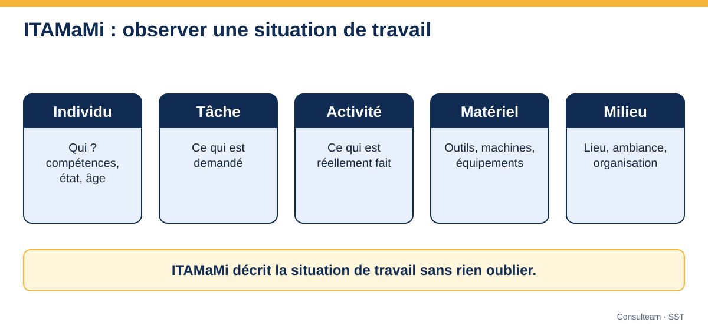
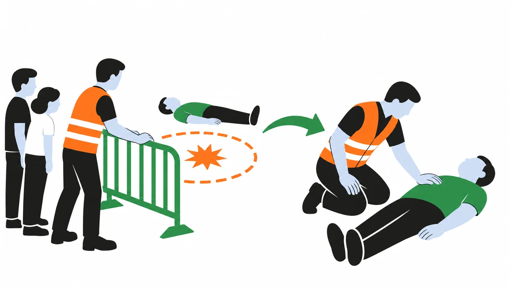
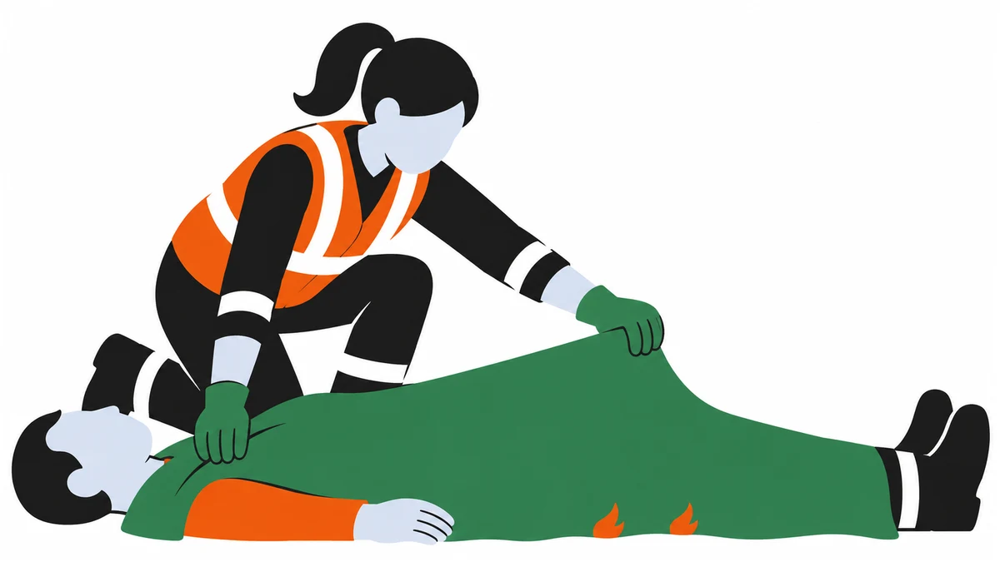
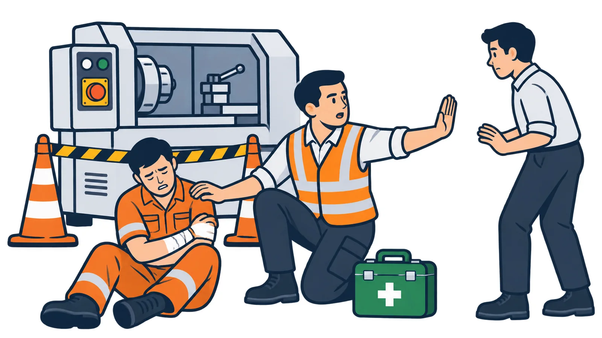
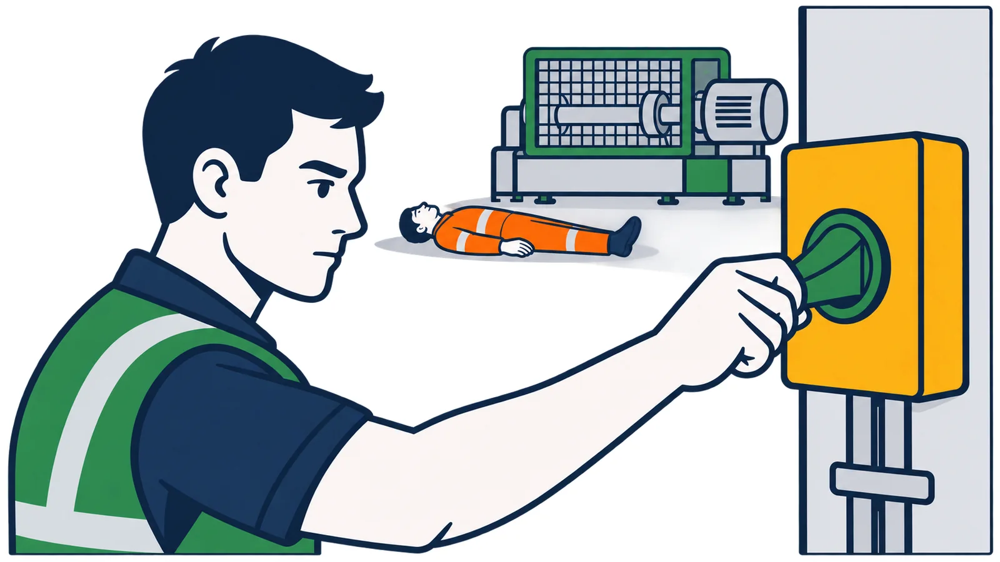
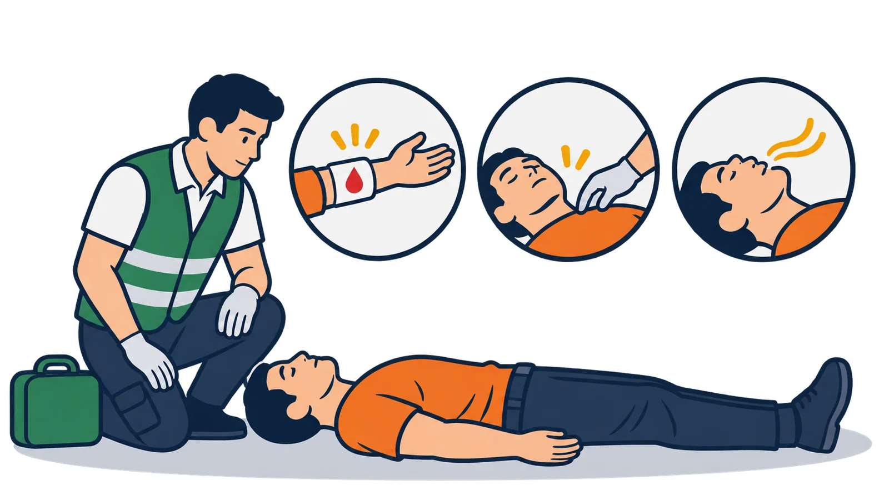
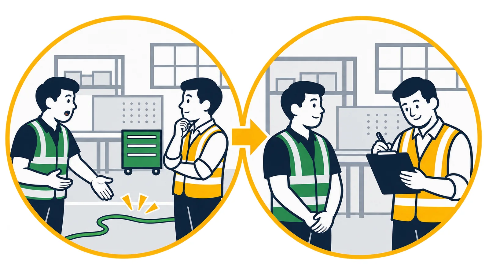

Galerie
Les schémas et illustrations du parcours. Cliquez pour agrandir. Les images générées par IA portent une mention.

Schéma Consulteam · module 1

Schéma Consulteam · module 2

Schéma Consulteam · modules 2,7

Schéma Consulteam · modules 3,5

Schéma Consulteam · module 4

Schéma Consulteam · module 5

Schéma Consulteam · module 6

Schéma Consulteam · module 7

Schéma Consulteam · module 8

Schéma Consulteam · module 8

Illustration · module 2

Illustration · module 5

Image générée par IA · module 2

Image générée par IA · module 2

Image générée par IA · module 2

Image générée par IA · module 3

Image générée par IA · module 4

Image générée par IA · module

Image générée par IA · module

Image générée par IA · module

Image générée par IA · module

Image générée par IA · module

Image générée par IA · module 6

Image générée par IA · module 8

Image générée par IA · module 8
25 visuels disponibles. D’autres illustrations seront ajoutées au fil de la production.